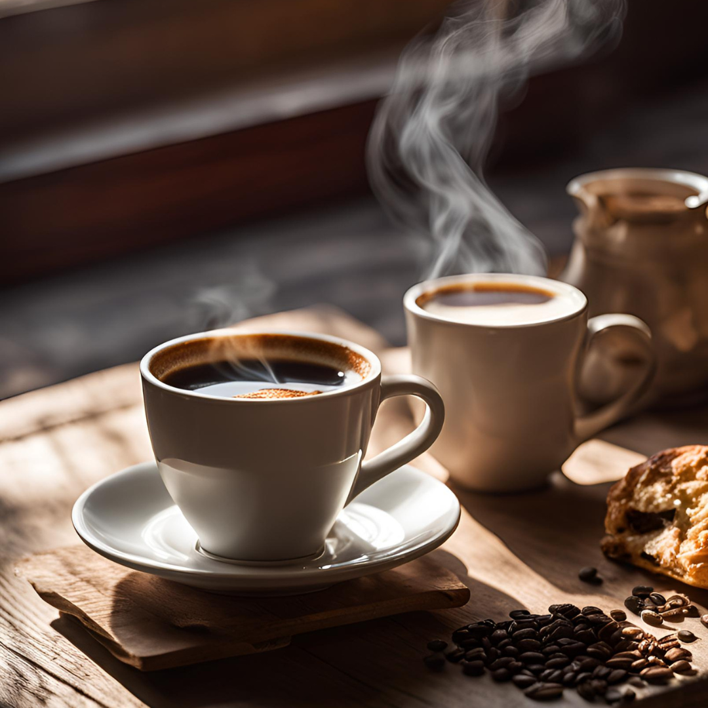
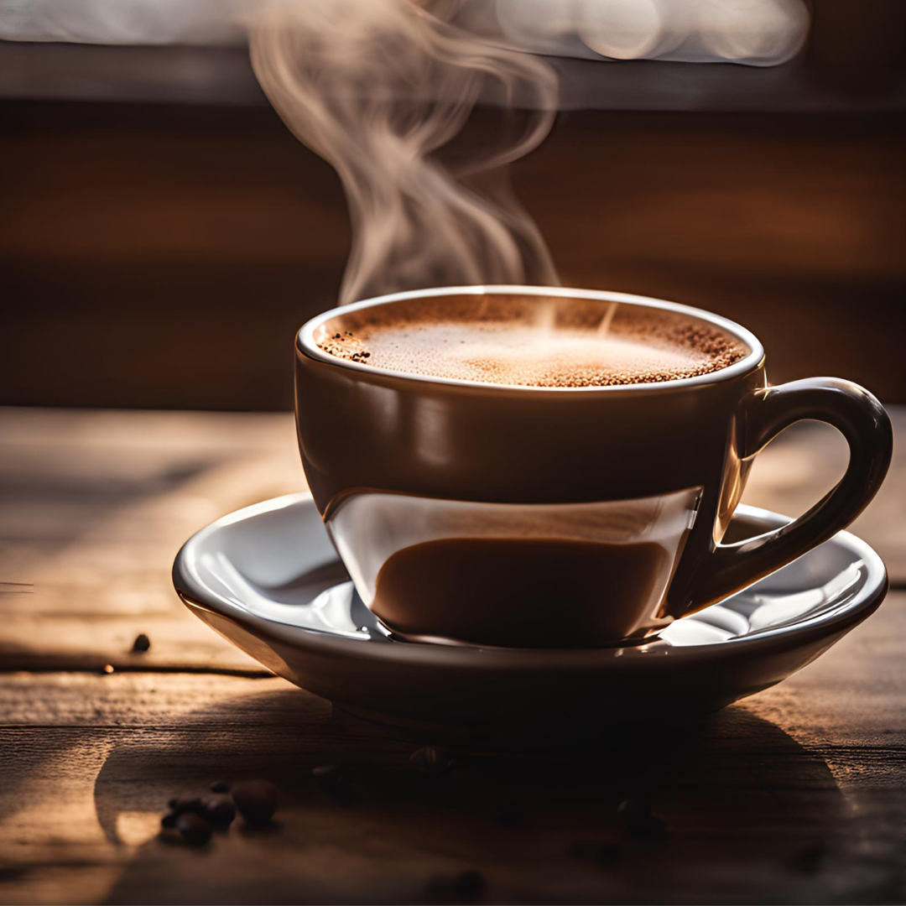
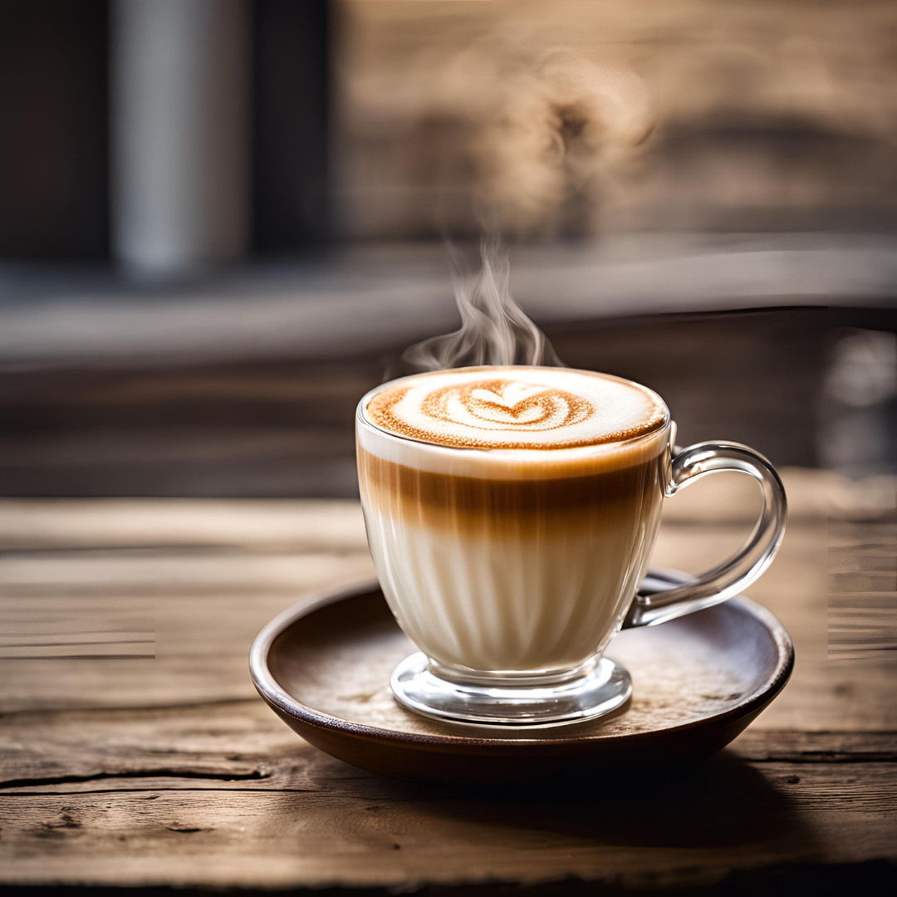
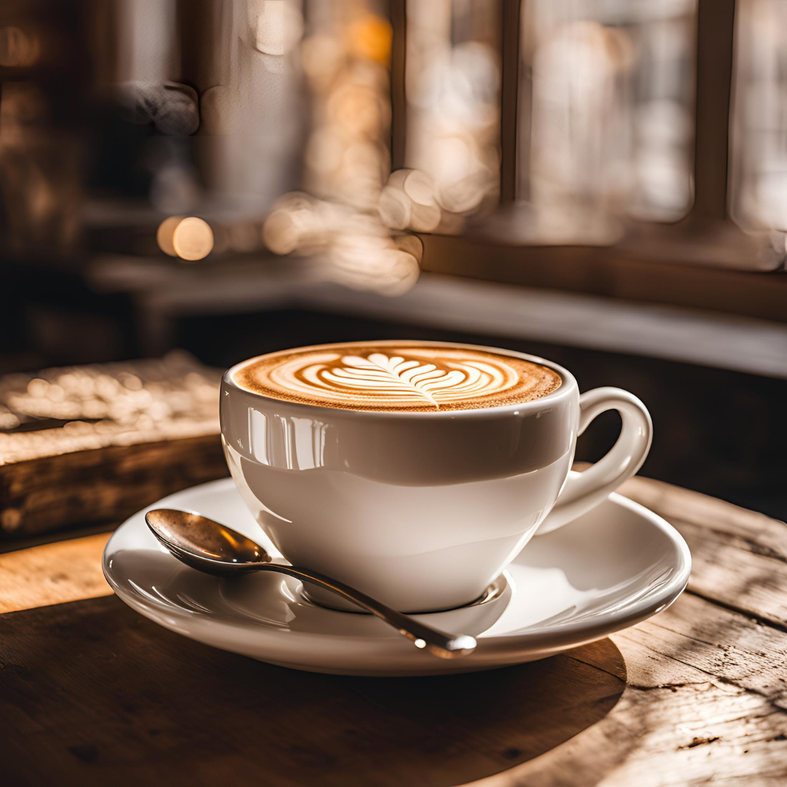
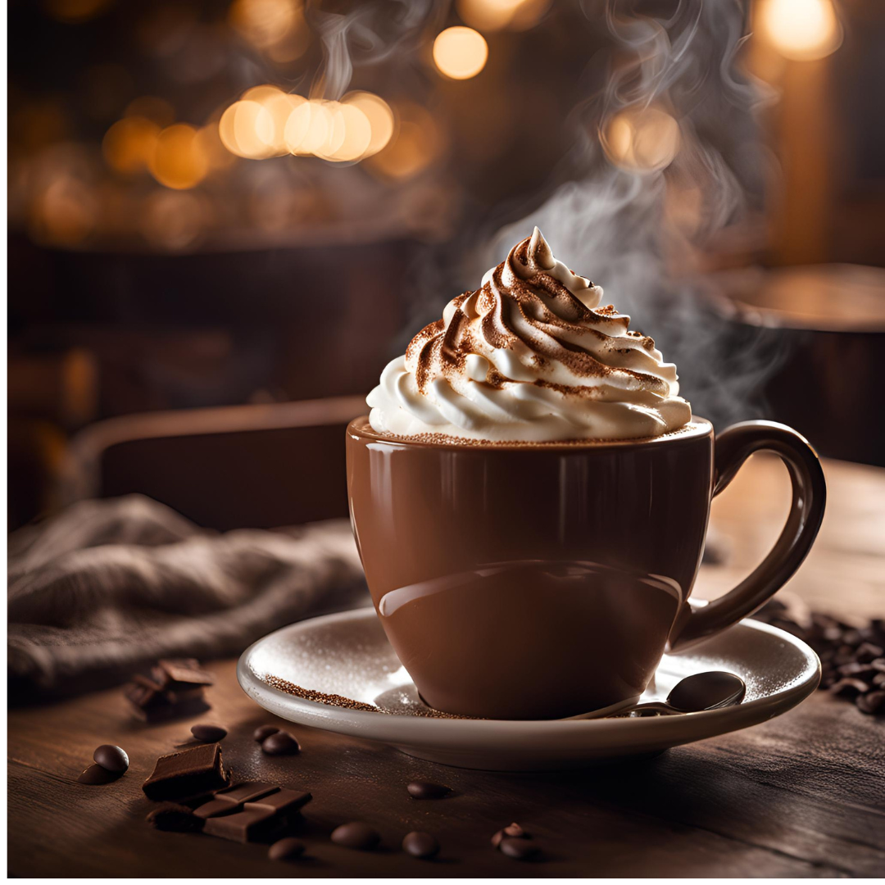
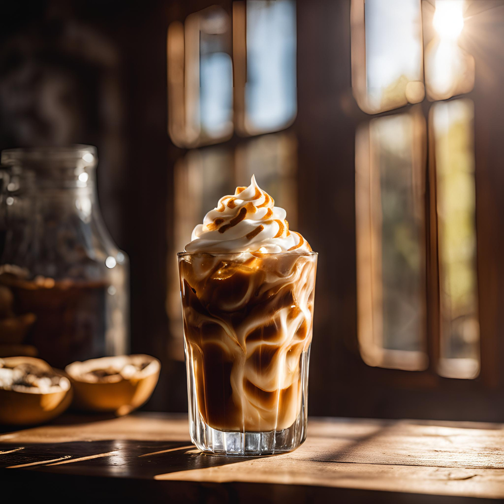
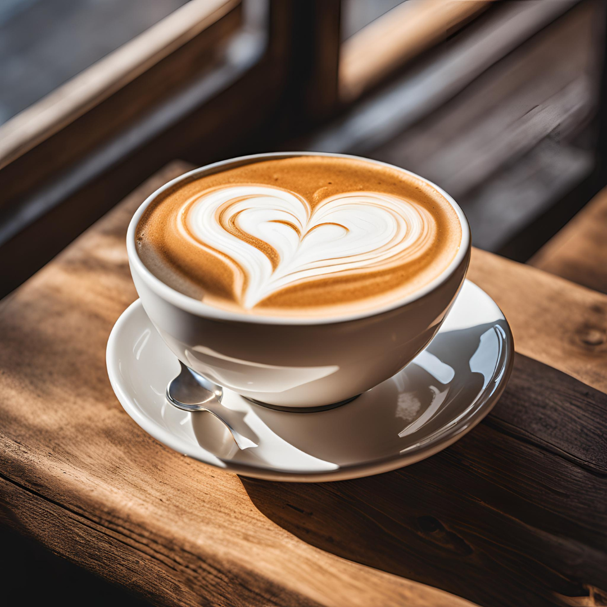
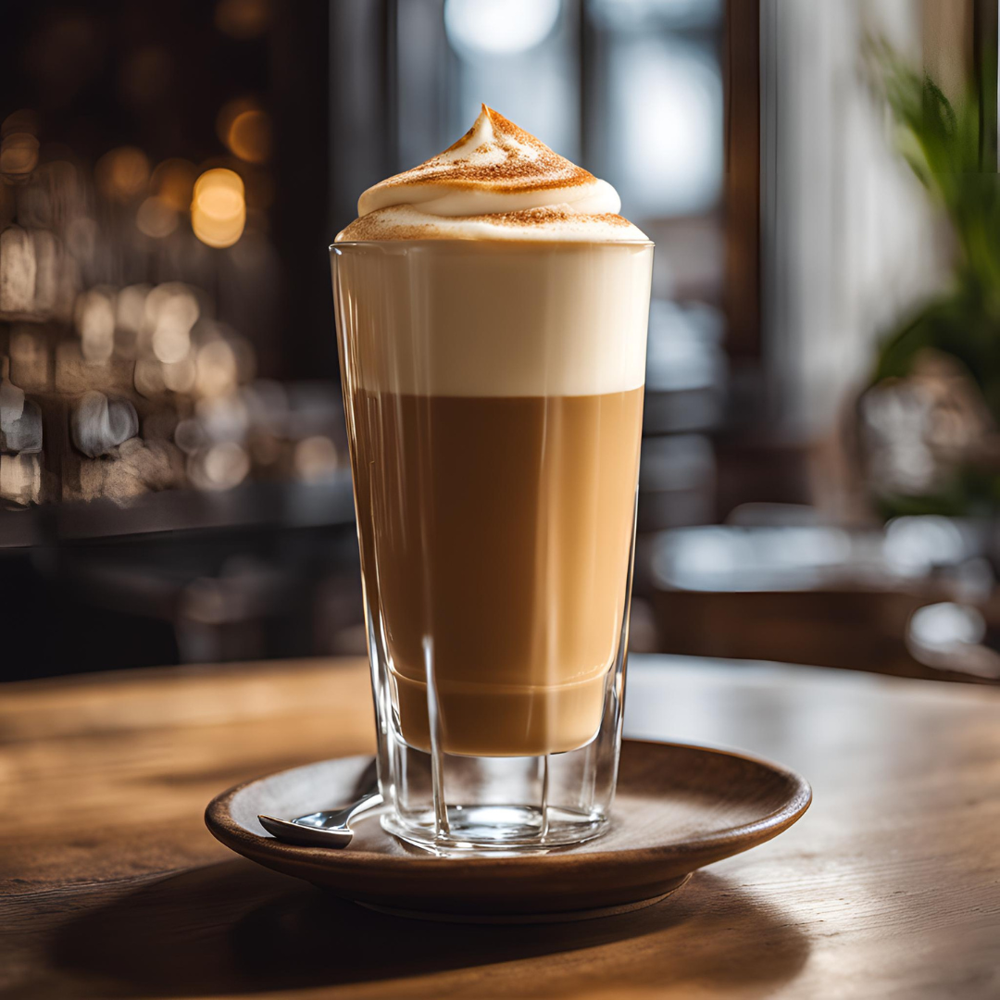
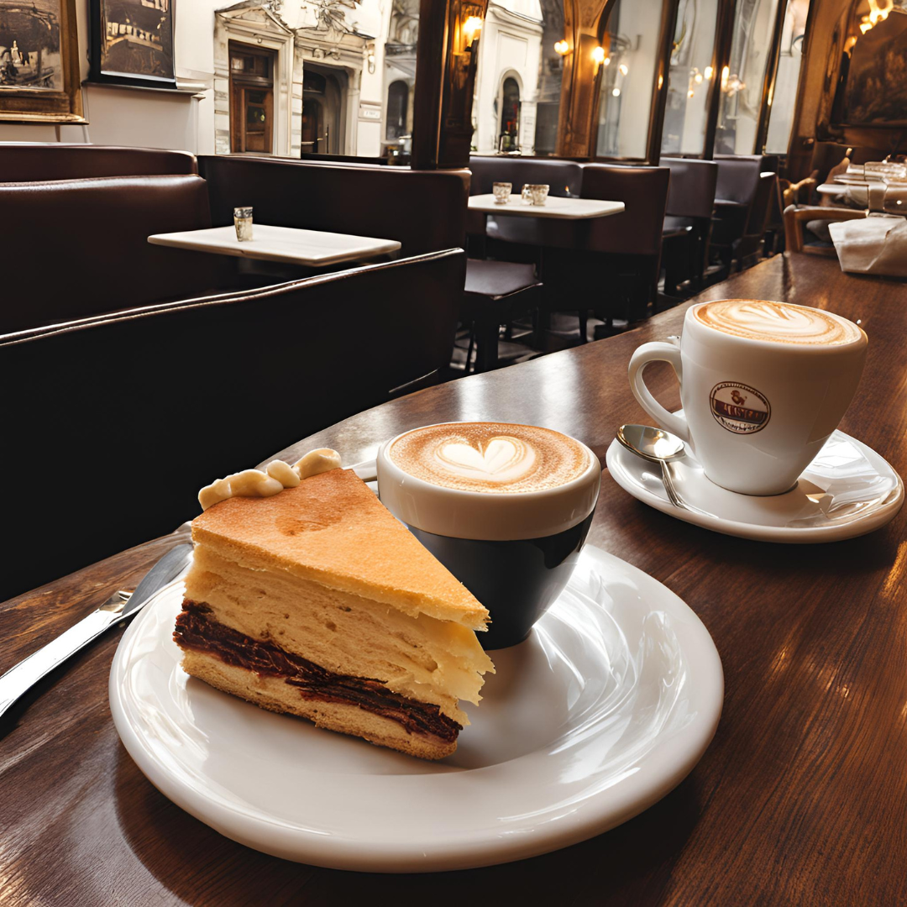
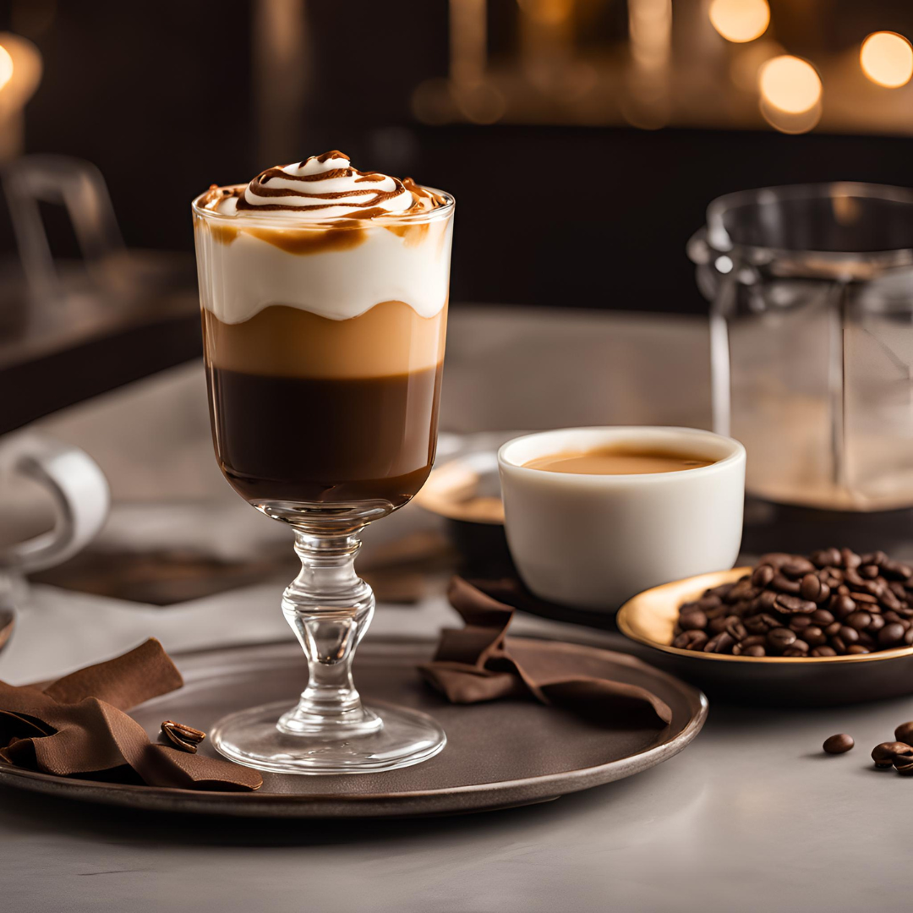

Clássico
O tradicional café preto, encorpado e aromático, perfeito para qualquer momento do dia

Expresso
Preparado sob alta pressão, um café curto e intenso que desperta os sentidos a cada gole

Macchiato
Espresso encoberto por uma leve espuma de leite, equilibrando intensidade e suavidade

Cappuccino
A combinação perfeita de espresso, leite vaporizado e espuma, com um toque de canela ou chocolate

Mocha
Uma deliciosa mistura de espresso, chocolate e leite vaporizado, finalizado com chantilly

Gelado
Refrescante e energizante, o café gelado combina sabor intenso com cubos de gelo

Latte
Suave e cremoso, o latte mistura espresso e leite vaporizado em perfeita harmonia

Cortado
Um espresso suavizado com uma pequena quantidade de leite quente, mantendo seu caráter robusto

Vienense
Espresso coberto com chantilly e um toque de cacau, para um momento doce e especial

Caramelizado
Espresso combinado com leite cremoso e uma deliciosa calda de caramelo, ideal para adoçar o dia.